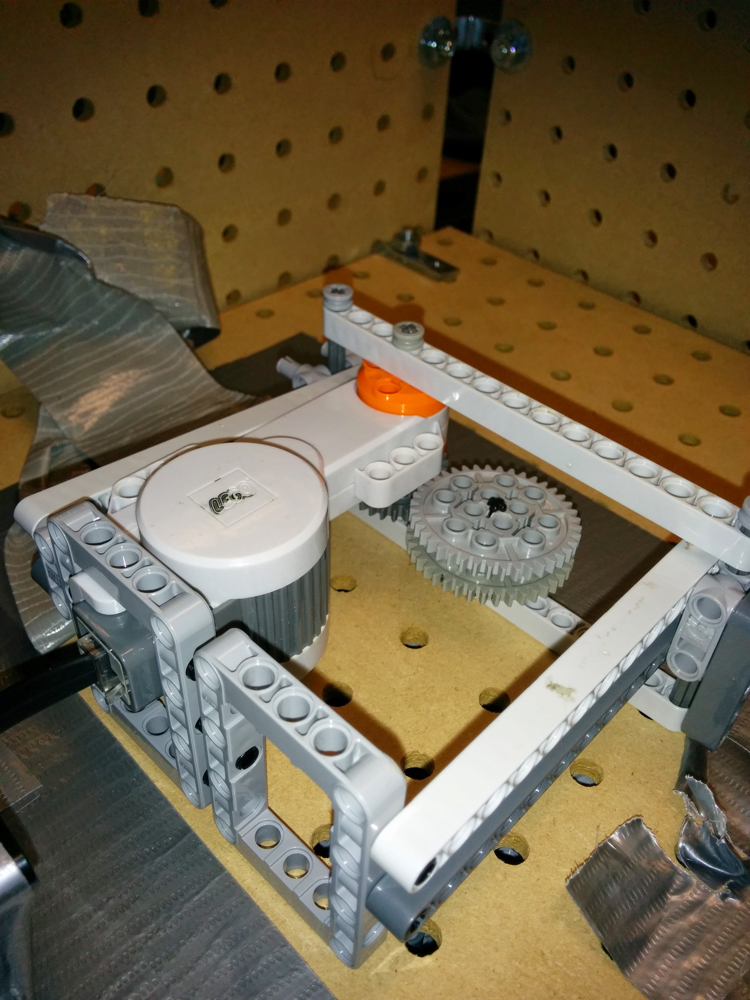

Platform
This was a school project build with Robot C (C-like language) on a Lego Mindstorms NXT.
Group Members: Benjamin Lo, Yifan Wu, Rares Gosman
Role: Lead software developer
This role involved laying out how the sofware should be programmed and actually programming major areas of code. I was responsible for the majority of the menu and can choice portion of the code.
How it operates:
The user is allowed to browse through an on-screen menu and order the drink of their choice. The user can order either just one can(the "simple" order) or multiple cans of different types(the "complex" order), which in the program are values stored into a number of arrays. The dispensing operation works by rotating the centre chassy until the colour sensor detects the colour corresponding to the required can. The chassy then stops, and an "arm" which is positioned inside the centre of it extends and pushes out the required can. There is also a button that the can falls on to ensure that the can was sucessfully dispensed. The operation will continue to run until all arrays containing can orders are empty.
Here is a basic flow chart which shows how the program is laid out. Note that i stands for the number of unique cans that were requested, and n stands for how many orders of a specific can were requested.
The actual code is avliable on my github, here.
Additional pictures/video
Front.

Bottom.
